Episode 16
Monday
Today is a pretty normal day of work. After work I go home and write up last weeks newsletter because I couldn’t finish the last one on time. I’m sure that will be the last time that ever happens :P
Tuesday
Today starts off with work as normal. After work I go home and read this essay on high agency. It was really good! I highly recommend you all read it after finishing this newsletter. I’m not going to summarize the whole essay but I do want to talk about some of the excerpts that really resonated with me.
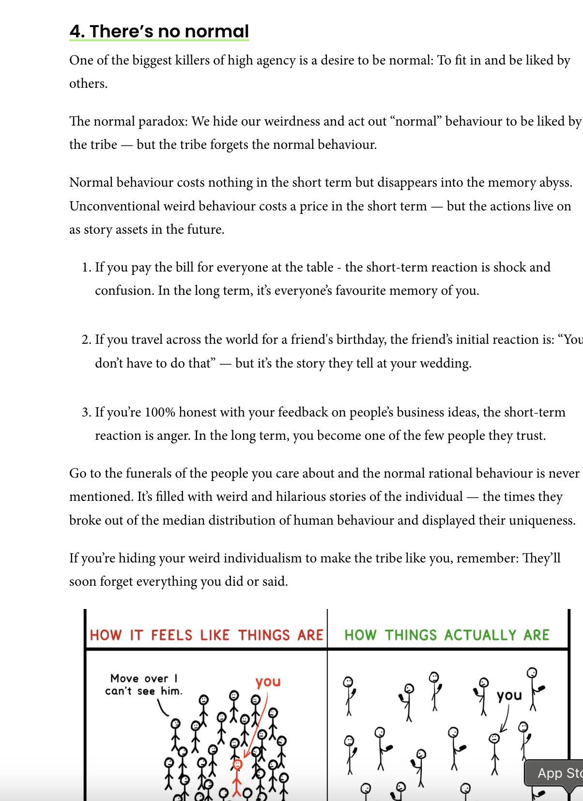
This is something that I think I’m better than average at but there could still be room for improvement at. It gave me the confidence to do a few more things this week that I’ll talk more about when the relevant sections come.
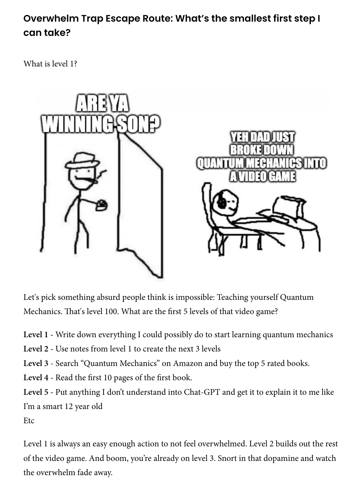
There have been lots of times in my life where I have wanted to learn something but have felt overwhelmed. I really want to take this advice to heart and be better about picking something and just breaking it down into small pieces. With LLMs these days I think this is easier than ever so I’m excited to start doing it!
After reading the essay I gave myself a project to help myself increase my agency. For this project I’m picking a goal and I’m going to try to do it. I’m not going to say what the project is here because its to help a friend of mine and I want to surprise them when its finished but once it is I will definitely write about it!
Wednesday
Today after work I do run club. This is one of the lower attendance Midnight Runners events I’ve been too with it being just me and one of my other friends. Nevertheless its still a fun time. I try a couple times to run backwards but I can never pull this off for more than a couple of meters at a time.
Thursday
Today after work I go to the library because I need to print some stuff and I’m amazed at how hard the task is. There are 4 different printers on the library each on a different floor and all but the last were out of order. I had to climb 4 different floors and with each floor my trust in the system progressively declined.
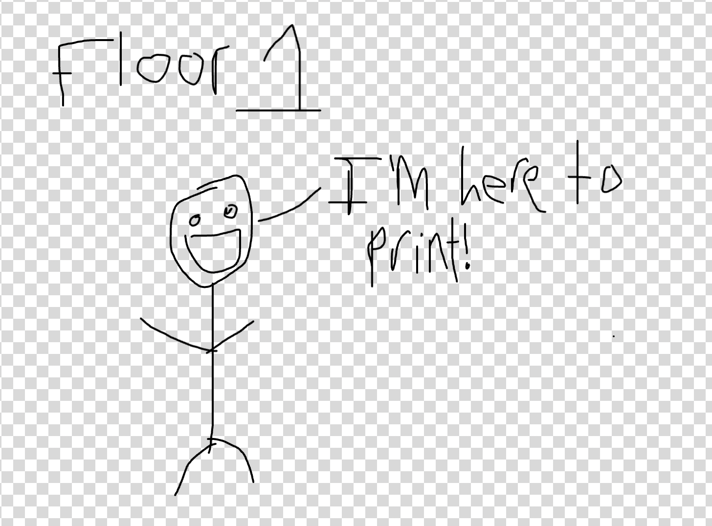
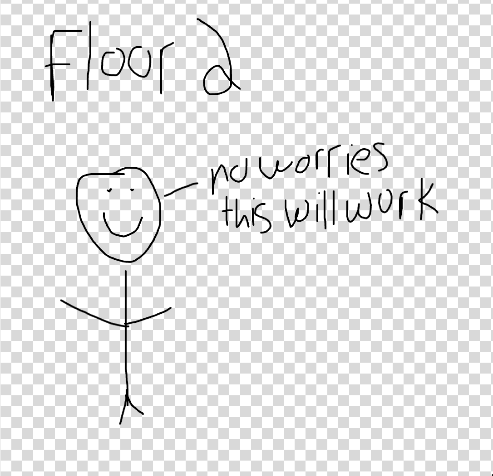
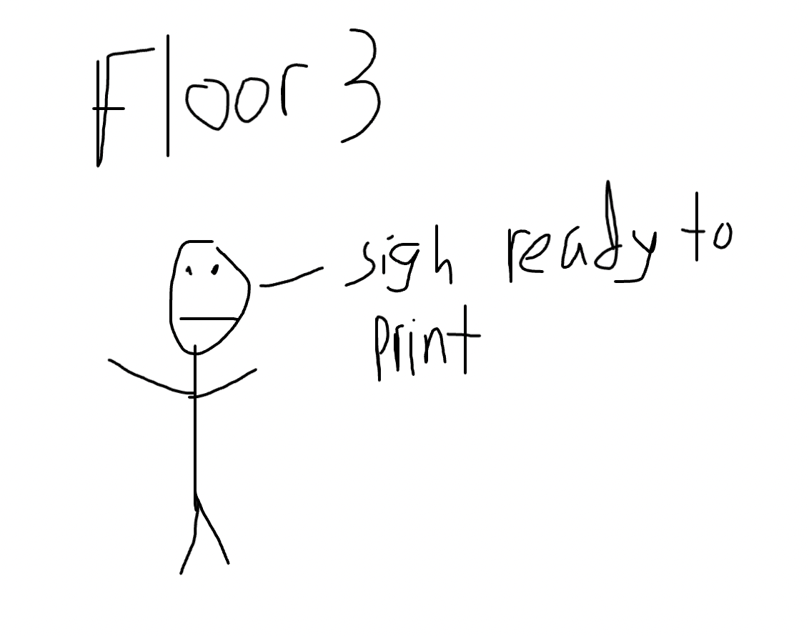
Eventually I do manage to find a printer that works thus saving the library from my lorid fantasies. After that I go home anticipating a chill night only to go to a friends bar night instead. Its good catching up with the boys.
Friday
Today after work I have a good friends’ birthday party. A while back when he came to my place I didn’t have enough chairs for everyone so I wound up sitting on an air purifier. He told me he wouldn’t have enough chairs for everyone so I thought it might be funny to bring the airpurifier to sit on as a joke. Originally I wasn’t going to follow through on this because carrying it would be heavy but after remembering that people remember me for the weird stuff I do I thought I should bring it afterall! I brought it with me to my office as well!
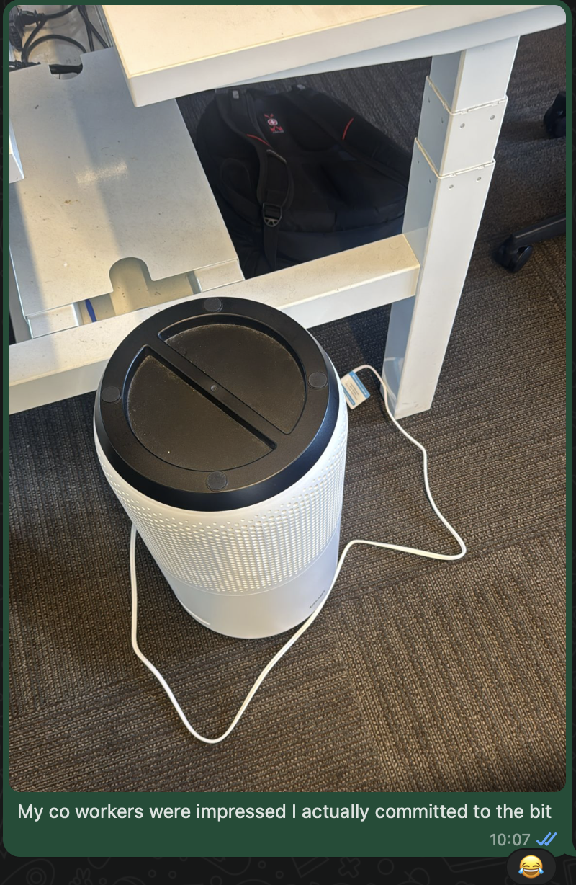
My office is in FiDi and the birthday party is in Mission. Originally I was gonna bus there but I thought if I really wanted to commit to the bit I should walk from FiDi to the Mission while carrying my air purifier and so I did! I only realized hours after the fact how sore my arms would be from that but it was worth it!
The birthday party itself was also really fun! I got my friend a custom birthday card. I met this friend through trash pickup so I made a card with me, him, and some other folks picking up trash!
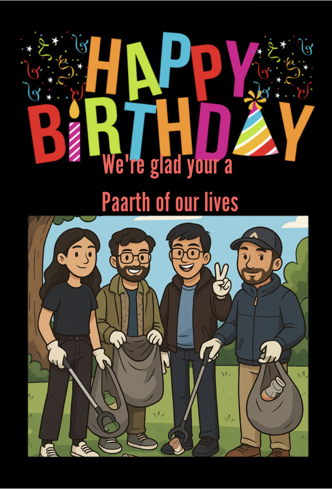
I already said this in your card but worth saying again Paarth. Happy birthday! I”m really glad I met you through trash pickup! You’re a really thoughtful person and I really appreciate talking with you. And I’m sure that this comment will only age like wine after the fact, not that thats foreshadowing or anything like that.
During the party someone smokes a joint, and someone who doesn’t like the smell of smoke it does start to irritate the ol lungs. I think to myself “if only there was something that could help” and then I remember my air purifier! Turns out bringing it came in handy as more than just a chair!
Saturday
Today starts off with trash pickup as per usual. After trash pickup I make a bit of progress on the secret agency project I mentioned. I think it will be done within the next week or two.
From there I decide to put up fliers advertising myself for dating! I took inspiration from a twitter thread where folks did the same thing and decided to try this myself. I made a bunch of fliers and hung them up along the Mission!
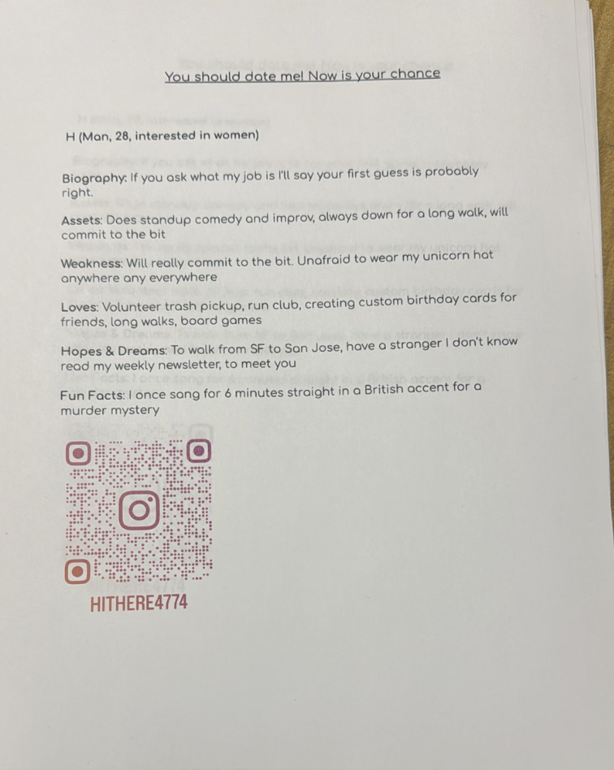
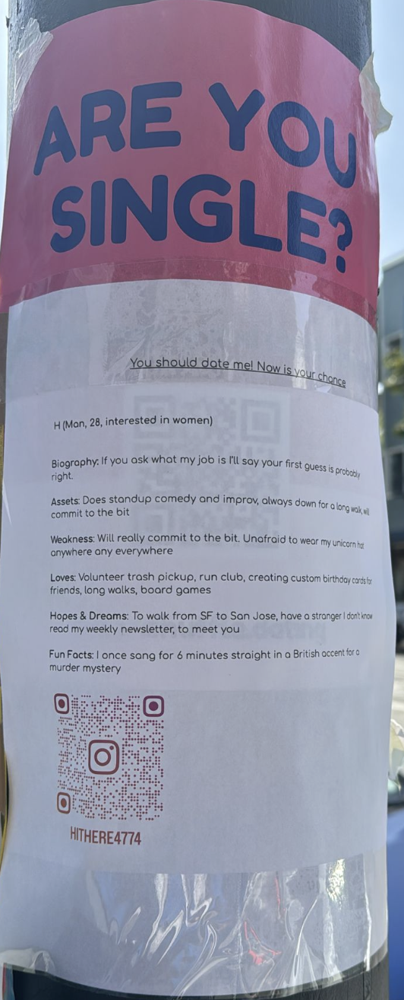
For one of the fliers I may have leveraged a shuffle dating poster for a joke :D.
After hanging up these posters I then go back home and build the couch I got delivered. Well I guess having my friend mostly build the couch with me helping would be a more accurate summary but now I officially have a couch and I’m not sure how to feel about that
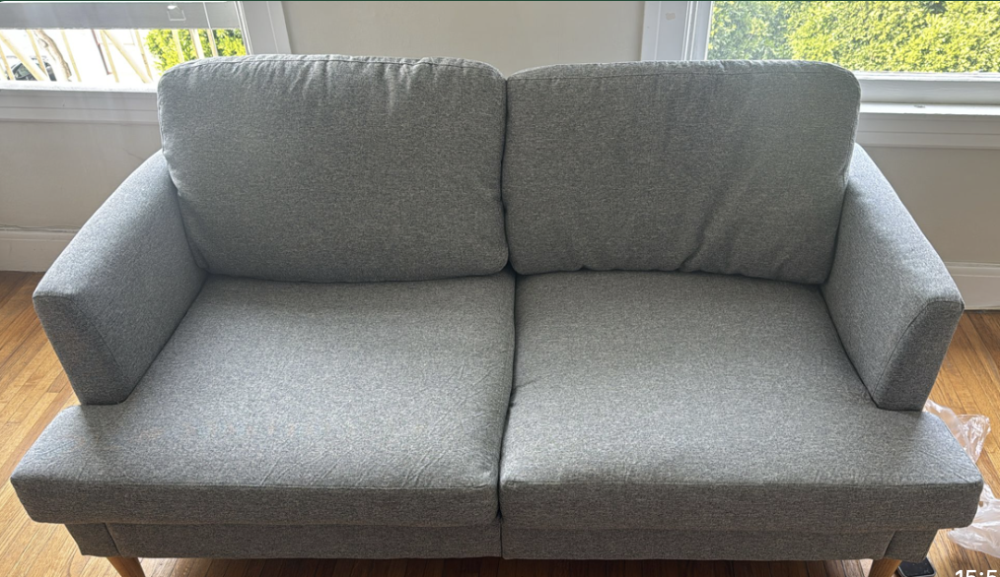
Once this couch gets built I go home to spend some time with my family for Eid.
Sunday
Eid Mubarak! Or so I thought. Turns out Eid is actually the following day rather than today. Most everyone assumed Eid would be today but because of how the moon sighting went that wasn’t the case. For context Islam follows a lunar calendar rather than a Gregorian one meaning that Eid isn’t a fixed calendar day every year, rather it follows the phases of the moon, and we use moon sightings to determine when the new month is. Sometimes we know in advance but its not always perfect and days like today are the exception.
As it turns out my older sister has a flight to Europe today so we all go to the airport to drop her off.
After that my Mom asks me what my plans were for the rest of the day. My parents were planning to go to an Eid party that neither me and my younger sister had any desire to go to. Because of that I was planning to go back to SF later on Sunday. Additionally since I hadn’t planned the day off in advance I wasn’t sure how much work I could miss so I express some trepidation about doing something on Eid day, instead wanting to hang out with the family today while I’m still here.
My Mom is not happy with this and tells me that its important that I spend Eid with the family even if the circumstances are out of our control. She gives both me and my younger sister a lecture about the importance of spending these holidays with the family. I do resolve that at the very least I will get lunch with my family.
One thing I had really wanted to do was hang out with my younger sister while my parents were out since I quite like talking with her. Originally she was onboard with the idea but later I noticed some lack of enthusiasm.
After getting back from the airport I ask her how shes doing and she tells me frankly that she is pissed at me. Her reasons for this are that I make much less of an effort to come home than she does despite being much closer (she is currently at UCSD right now for reference). She mentions that she wound up getting lectured about this despite making a whole bunch of efforts because of my actions. She talks about how she missed out on being able to take a once in a life time class that required her to be there on Eid day to be here while I’m talking about having to miss some work. She thinks I treat coming home like an obligation and she feels bad for my Mom because I don’t come home more.
I generally come home about once every 1.5-2 months on average usually for about a day at a time. Perhaps at this point I should mention some of the reasons why I don’t come home more.
A feeling of isolation. The thing about Marin is that it can be very hard to do things while I’m there. Unlike in SF where there is always stuff happening in Marin I don’t really have easy ways of being able to do things while I’m at home. As a result I can often feel pretty cooped up
Hard to be myself. One thing about going home is it can feel like there is a lot I can’t tell my parents about. One of the biggest things for example is my trash pickup hobby. Considering its my biggest hobby and I’ve met so many different friends and done so many different things because of it its a pretty big part of my life to hide. The reason I can’t tell them is they very strongly disapprove saying that its the governments job to be doing this not mine and because of the risk of needles. They also think Mission is a ghetto and aren’t happy that I spend time there.
A lot of times when I go home I wind up getting lectured about one thing or another. Sometimes its my weight, sometimes its about the fact that (according to my parents), the world is going to heck in a handbasket, and sometimes is about religion. It can make going home feel like getting a heavy sermon.
Fear of being judged. One thing that should be pretty apparent about me is that I tend to like to live life my own way and fully embrace my quirks in ways that my parents wouldn’t approve of. For example if I told my parents the story about how I carried an air purifier to someones house as a part of a bit they would tell me its incredibly stupid and that people would think I’m dumb for doing that. Not to mention other things like the chastity hat as well. A lot of my favorite stories to tell are not ones I can tell them
Of course I don’t want you to get the wrong idea and its not as though I view going home as a complete hellscape or anything like that. When I have fun conversations with my parents and siblings they really are fun and something I enjoy. Unfortunately the negatives are there.
After my sister explains her perspective to me I ask her if she wants to hang out and she says she doesn’t really feel like it so I decide to just go back to SF.
I decide to do a yoga class since I get a free one from trash pickup and maybe it can help me clear my head. I go with Paarth of “Paarth whose birthday was on Friday” fame.
The yoga class winds up being quite challenging as I have to do a bunch of poses that I’m not really used to. Some of these poses are easy and others make me feel like I’m being ground through the ringer.
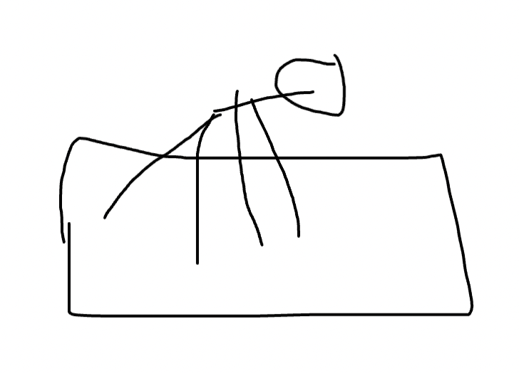
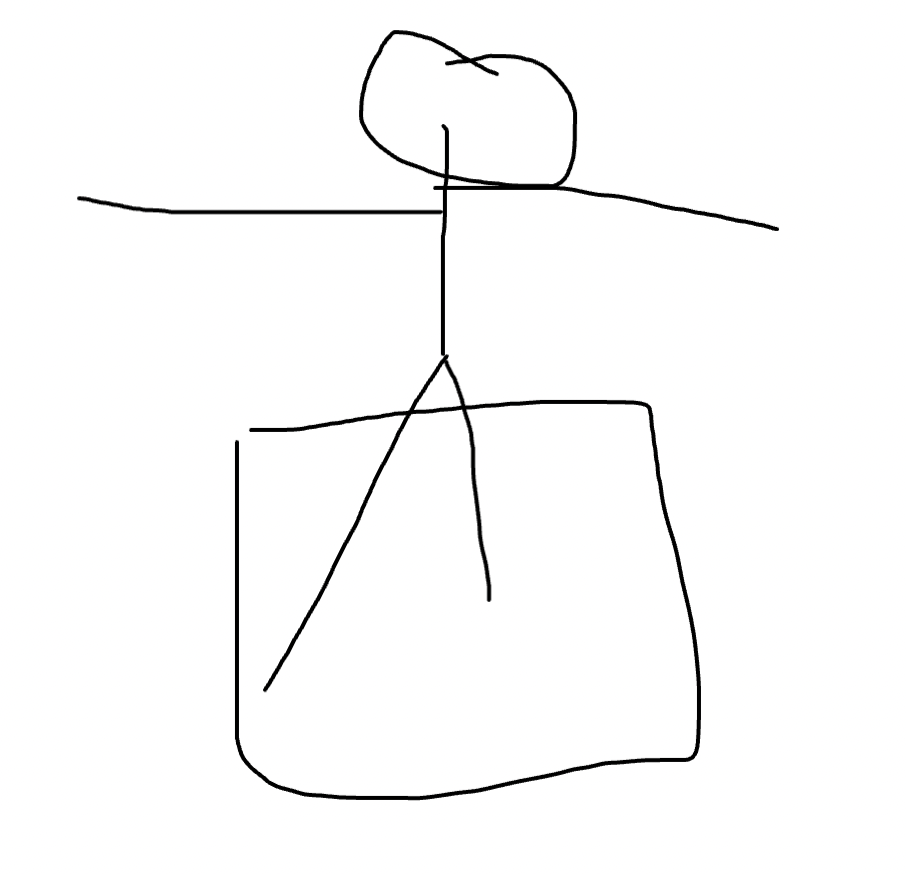
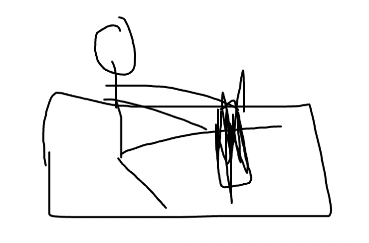
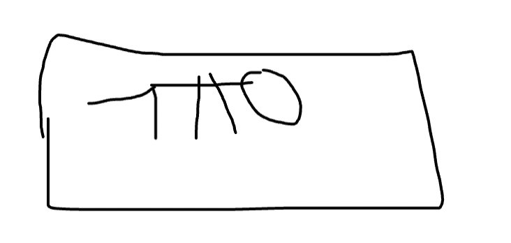
Throughout the yoga class I think about the concept of stillness. I can often have a hard time remaining still so I found just stretching to be challenging mentally. Throughout this yoga class I was thinking a lot about what my younger sister said to me since it was still fresh in my mind. The stretching was probably good for my body and I enjoyed the class but I have yet to find that “zen” or whatever that I think many yoga people have. I wouldn’t call this an addictive experience or something I really liked. But at least its better than the last yoga class I did where I did it in jeans (first I do run club in jeans turns out I also did yoga in jeans as well).
After the yoga class I get dinner with Paarth and someone else at the yoga class. Well maybe getting dinner is a bit of a strong word for hanging out with them while they eat pizza. Whats important were the vibes and they were great!!
After dinner I talk more with Paarth and I explain to him the situation above with my sister and he gives me some great advice. One of the most notable things I learned was the feelings wheel, a tool to help articulate exactly how you are feeling. At that moment I really needed to talk with someone about this so I’m really glad you were there Paarth. I wrote in your birthday card that I think you are a very thoughtful person and that was truly some foreshadowing :D.
Once I get home I decide I don’t really have the energy to write my newsletter so I kick the can down the road
Monday
Today I’m making an exception and doing more than the standard week! Today is actually Eid so actual Eid Mubarak! It turns out there is no WiFi at my office which may well be an Eid miracle so I decide to go back early in the morning and say Eid prayers with my Dad. Its a tradition we do every year where we go to the mosque early in the morning and pray for Eid.
After that I go home and do a bit of remote work before we go out for Eid lunch. Before lunch I have a conversation with my sister where we talk a bit more. It turns out she was also upset that I just left yesterday and that I didn’t want to spend time with her. I apologized and explained I only left because I thought she didn’t want to spend time with me. Turns out we had a bit of a miscommunication. I talk with her some more and explain some of the reasons above why I have a hard time coming home and she mentions that some are legit like feeling cooped up but others are less so. So perhaps its a mixed bag. Either way we do reach a resolution where she at least understands why I may have acted the way I did. One thing I also realized after yesterday was that at some point I need to just open up to my parents more despite the risk of judgement if I truly want to be closer to them and make coming home more enjoyable. It may be painful in the short term but ultimately necessary in the long term.
We then go to lunch. It takes a few tries to find a good place but we ultimately settle on Beit Rima.
After lunch I go into the office and after a few hours there I go home and write up the newsletter!